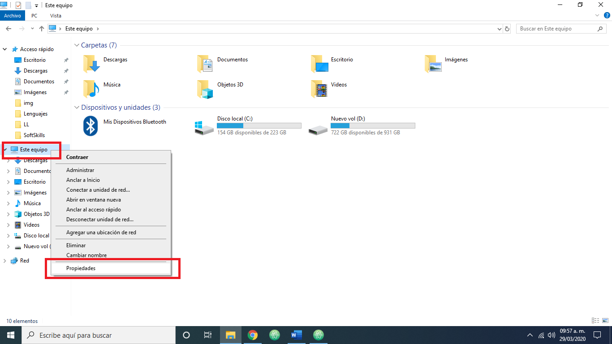
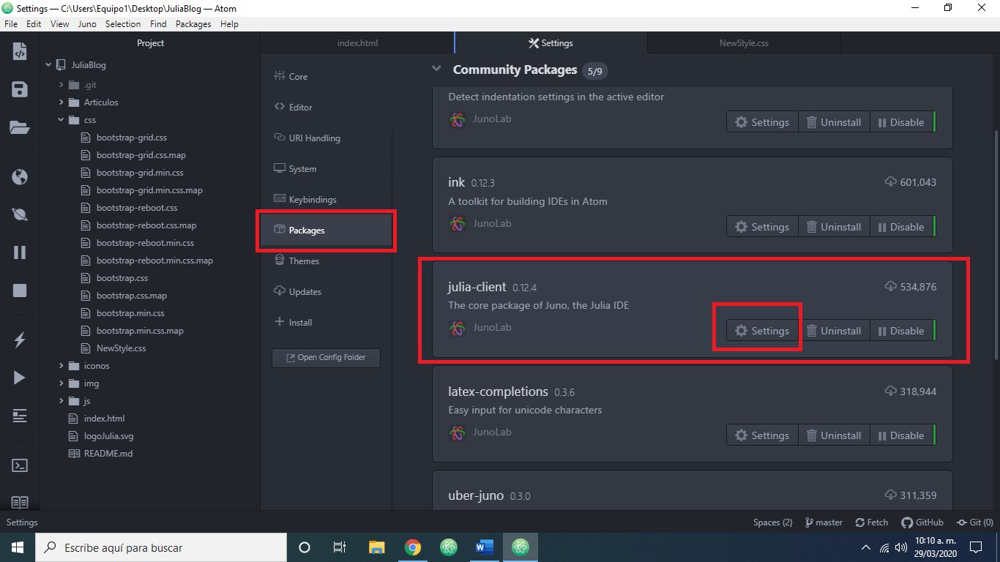
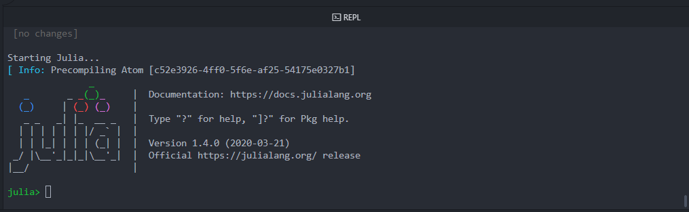

Instalacion del lenguaje Julia
Instalar el lenguaje de programación Julia en tu computadora es muy facil, solo tienes que seguir los siguientes pasos:
1.- Entrar a https://julialang.org/downloads/
y descargar la versión correspondiente a tu sistema operativo.
2.- Abrir el instalador y copiar y guardar en un bloc de notas la
dirección que aparece en la caja de texto, posteriormente dar clic en install.
3.- Entrar a https://atom.io/ y dar clic en download.
4.- Instalar atom.
5.- Abrir atom e ir a Settings.
6.- Ir a Install.
7.- Escribir “uber-juno” y presionar enter.
8.- Dar clic en install del primer resultado.
Habiendo seguido estos pasos ya tendremos instalado Julia y el IDE de Julia
en nuestra computadora, pero posiblemente haya un problema al intentar utilizar
el lenguaje Julia, debido a que el PATH no se configuro automaticamente.
Configuración del PATH
1.- Dar clic derecho sobre "Este equipo" y dar clic en "Propiedades".

2.- Dar clic en "Configuración avanzada del sistema".
3.- En la pestaña "Opciones avanzadas" dar clic en el botón "Variables de entorno".
4.- Dar clic en "Path" y en "Editar".
5.- Dar clic en "Nuevo".
6.- Pegar el texto que copiamos del instalador de julia y agregarle al final “\bin”.
7.- Dar clic en "Aceptar" hasta cerrar todas las ventanas abiertas.
8.- A continuación ir a "Packages" y buscar el package "julia-client", dar clic en "Settings".

9.- En "Julia Path" escribir la dirección que pegamos en el Path y agregarle al final “\julia.exe”.
10.- Ahora todo debería estar correctamente configurado, para verificarlo daremos clic en Juno > Open REPL.
11.- Presionar ENTER en la consola que aparece y espera a que la descarga termine.
12.- Cuando aparezca el logo de Julia el proceso habrá terminado y podrás comenzar a crear proyectos con el lenguaje Julia.
